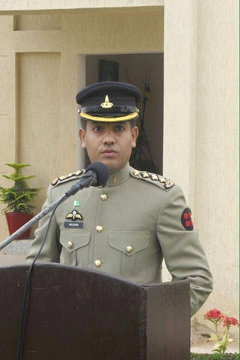
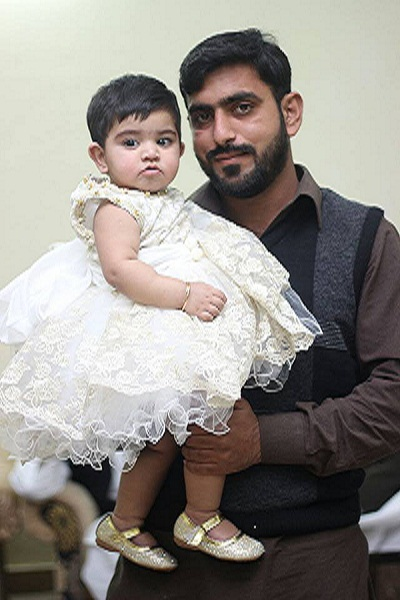
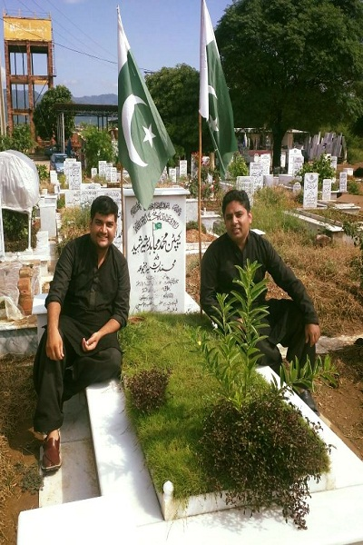
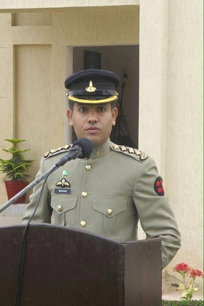
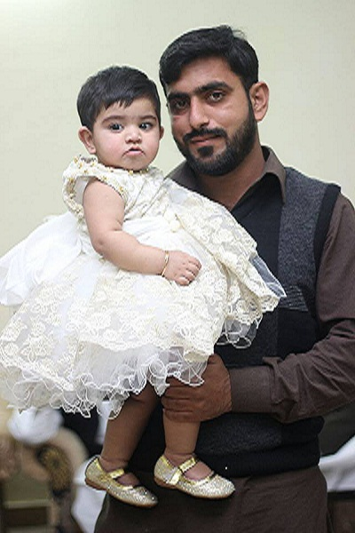
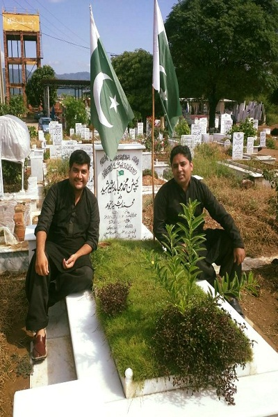

CAPTAIN MUJAHID BASHIR
Many Pakistan army personnel are losing lives in the military operations in northern
parts of the country against extremist groups; their families mourn while others
celebrate Eid ul Fitr.
Eid celebrations marking the end of the fasting month of Ramadan this year aren't so
joyful for the newly-married wife of Captain Mujahid Bashir, who had embraced
martyrdom on July 12, 2014 in Bajaur Agency.
"I got married 6 months ago on January 12, 2014. I was desperately waiting for our first
Eid together; now it will be spent in darkness," said Saliha, the widow of Captain
Mujahid, in Islamabad.
"Everything was fine. Mujahid had taken leave and was coming home after one week for
Eid vacations. We had also prepared his room when we all of a sudden got the news of
his martyrdom," said Tahira, the sister of Captain Mujahid, with sad face.
"Our Eid festivity is with sorrows and grief," said father Muhammad Bashir dissolving in
heavy tears.
The family of martyred Captain Mujahid feels gratified over the martyrdom in the holy
month of fasting.
"Defending the country is an honourable thing. Soldiers take up to defend their country.
For the country they put their life at stake and it is called martyrdom," said younger
brother Muhammad Shahid with pride.
Talking to The Nation, the overwhelming emotions of Nazira Bibi, the mother of Captain
Muhahid, on her son's death were visible.
"Mujahid used to call me and say Ammi please pray that God Almighty bless me with
shahadat. And I used to say my son please don't say like this. I want to see your kids in
my life. I haven't slept from the day of his death. When I close my eyes, I see his face in
front of my eyes," she said.
Saliha Mujahid had a sad face, with plain white clothes but lighting up as she was
recalling her short and happy time with her husband.
"My Eid preparations were high as it was our first Eid together and Mujahid was finally
coming from hard area permanently. I had given Eid clothes to tailor and Mujahid and I
had planned so many things for Eid," Saliha said.
"My heart cries every time I see my sister-in-law in state of shock and trauma. She wakes
up in the middle of night and weeps, and her eyes have swollen dry because of crying,"
Tahira said.
"Our lives have completely changed. We no longer feel any happiness; feel hunger,
or even sleep. When someone dies, we think we feel the pain but no, we don't. Nobody
can feel until their loved one goes away for ever." Father of the martyred Captain
Mujahid said and started weeping with a loud cry.
"Mujhaid's mother and I are very old and sick. I buried my son with my own hands. I
cannot express the pain in my heart in my words," he added.
The sweetness of Eid festival has been changed into heart breaking memories in the
house of the late military officer. "Mujhaid Bhai's birthday was on July 8. We had
arranged a birthday party for him on Eid. Our all excitements have become gloomy without
him," said younger brother Shahid Bashir.
"It still seems like a dream. And we sometimes think Mujahid will come home to
celebrate Eid with us," Tahira said with eyes full of tears.
Captain Mujahid Bashir, who was martyred in a cross-border attack in Bajaur Agency, was
laid to rest in a local graveyard in Islamabad on Sunday. A high number of relatives,
military officials and members of the general public attended his funeral prayers held in
Sector G/9. Speaking to the media, Bashir’s father said he was proud of his son who sacrificed
his life for God and country. He said Mujahid’s sacrifice for Pakistan has raised the status
of his family and they could not be more proud of him. Three security personnel were
martyred when militants from Afghanistan attacked a Pakistani check-post in Bajaur
Agency on Saturday. Security sources said the militants attacked a check-post in the border
area of Ghakhipas, in Mamond tehsil of the agency from Afghanistan’s Kunar province. As
a result, a captain and two soldiers were killed and two others sustained injuries.
 





.png "Google")
.jpg "Youtube")

.jpg "Twitter")